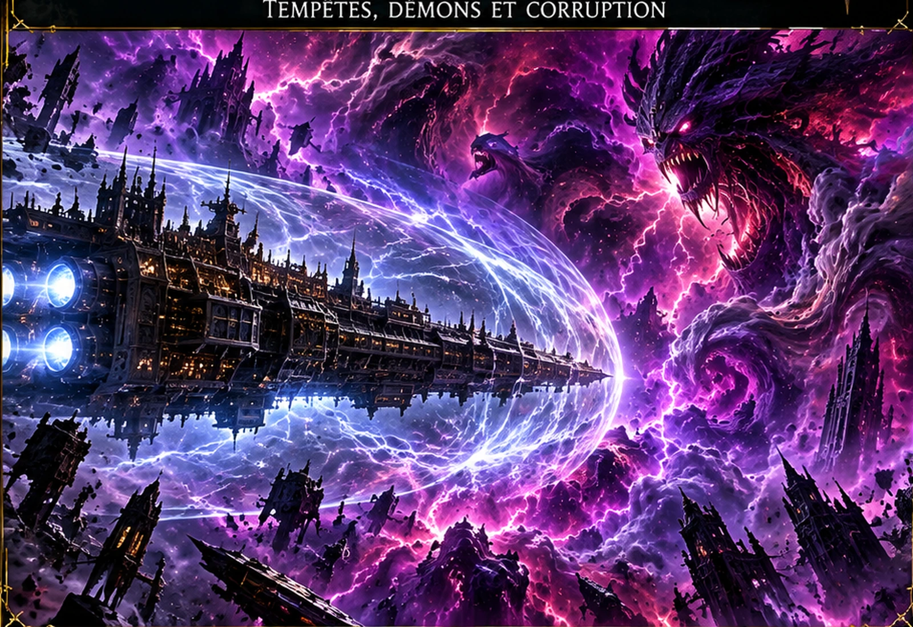
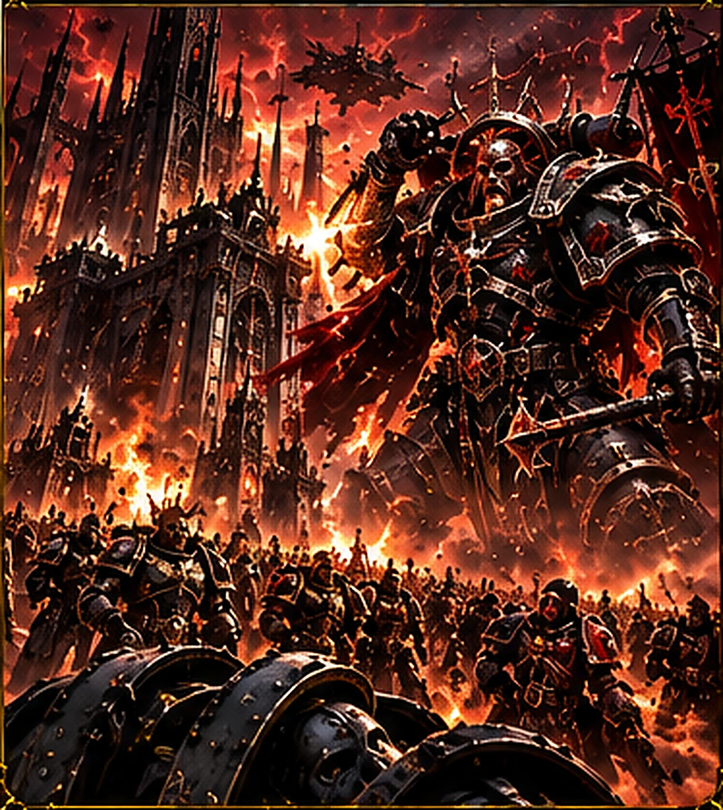
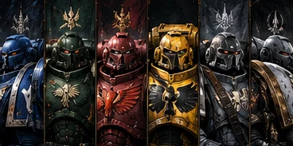
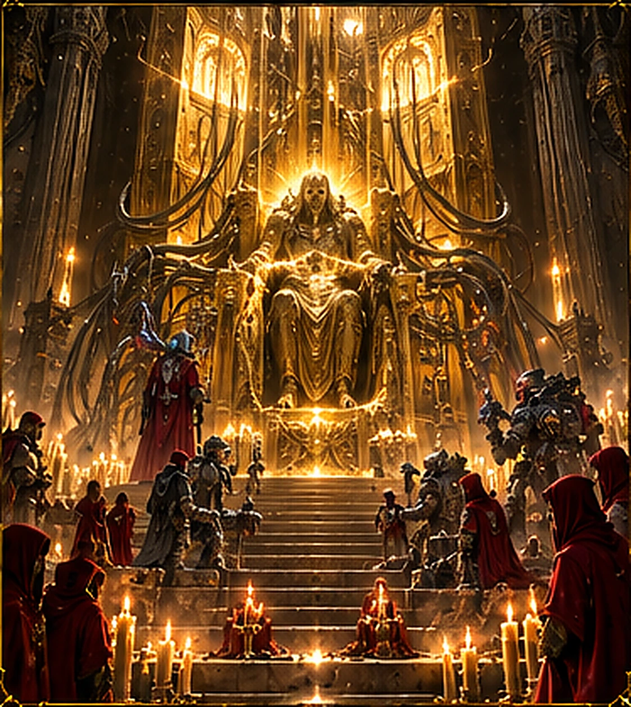

LE WARP ET LE CHAOS
Une dimension indispensable aux voyages interstellaires, mais aussi le royaume des puissances les plus redoutées de la galaxie. Explorez huit chapitres pour comprendre les liens — et les différences — entre le Warp et le Chaos.
Qu’est-ce que le Warp ?
L’Immaterium, miroir des émotions

Le Warp, ou Immaterium, est une dimension parallèle à l’espace réel. Il ne s’agit ni d’une planète ni d’un endroit que l’on pourrait cartographier comme un secteur de la galaxie : ses courants, ses distances et même l’écoulement du temps échappent aux lois physiques habituelles. Les êtres dotés d’une âme y projettent une présence psychique, et leurs émotions contribuent à l’agitation de cet océan invisible.
Dans le monde matériel, un voyage entre deux étoiles peut prendre des générations. En pénétrant dans le Warp, les vaisseaux impériaux peuvent franchir des distances considérables en un temps bien plus court. Les Navigateurs, mutants dotés d’un don héréditaire, guident ces traversées en s’orientant notamment grâce à l’Astronomican, le phare psychique émanant de Terra.
Le Warp est aussi la source de nombreuses manifestations psychiques. Les psykers peuvent puiser dans cette énergie pour accomplir des prouesses impossibles, mais leur pouvoir n’est jamais anodin. Le Warp est une nécessité pour la civilisation impériale autant qu’une source de dangers permanents.
Pourquoi le Warp est-il dangereux ?
Tempêtes, navigation et champ de Geller

Un vaisseau qui entre dans le Warp quitte les repères familiers de l’univers matériel. Les courants immatériels peuvent modifier son itinéraire, le ralentir ou l’emporter très loin de sa destination. Les tempêtes Warp peuvent isoler des systèmes entiers et couper leurs échanges pendant des années, voire des siècles.
Pour protéger son équipage, un navire impérial active un champ de Geller, une barrière qui maintient autour de lui une zone de réalité relativement stable. Si cette protection cède, les occupants deviennent vulnérables aux phénomènes du Warp et aux entités qui s’y trouvent. La navigation demeure donc une entreprise périlleuse, même pour les flottes les mieux équipées.
Les psykers sont particulièrement exposés, car leur esprit entretient un lien direct avec l’Immaterium. L’Imperium les redoute autant qu’il en dépend : sans astropathes, Navigateurs et autres spécialistes, ses communications et sa cohésion seraient profondément compromises.
Les quatre Dieux du Chaos
Khorne, Tzeentch, Nurgle et Slaanesh

Les quatre grandes puissances du Chaos sont des entités du Warp nourries par les émotions et les comportements des êtres sensibles. Elles ne se résument pas à quatre armées ennemies : chacune représente un ensemble de pulsions qui se retrouvent, à des degrés divers, dans les civilisations de la galaxie.
Khorne incarne la rage, la violence et la soif de combat. Tzeentch est associé au changement, aux intrigues, à l’ambition et à la sorcellerie. Nurgle se nourrit du désespoir, de la maladie et d’une forme de résignation pervertie. Slaanesh représente l’excès, l’obsession et la recherche insatiable de sensations. La naissance de Slaanesh est intimement liée à la Chute de l’ancienne civilisation aeldari.
Ces puissances rivalisent sans cesse dans ce que le lore appelle le Grand Jeu. Leurs alliances sont fragiles et leurs serviteurs peuvent s’affronter autant qu’ils combattent l’Imperium. C’est l’une des raisons pour lesquelles le Chaos, malgré son immense pouvoir, reste profondément divisé.
Les démons et les serviteurs du Chaos
Quand l’Immaterium touche le monde réel

Les démons du Chaos sont des entités liées aux puissances du Warp. Dans l’Immaterium, ils peuvent exister selon des règles très différentes de celles de notre univers. Pour se manifester durablement dans le monde matériel, ils ont généralement besoin de conditions particulières : failles entre les dimensions, rituels ou concentrations d’énergie psychique.
Tous les serviteurs du Chaos ne sont pourtant pas des démons. Certains sont des humains qui ont rejoint des cultes clandestins, des chefs de guerre attirés par la promesse du pouvoir ou des populations entières manipulées par des prédicateurs. Beaucoup ne comprennent pas pleinement les forces qu’ils servent.
Le danger est donc autant intérieur qu’extérieur. Une révolte peut cacher l’influence d’un culte, et une planète apparemment loyale peut dissimuler des réseaux de corruption. C’est pourquoi l’Inquisition surveille avec une extrême méfiance les signes d’influence chaotique.
L’Hérésie d’Horus
La rébellion qui a brisé la Grande Croisade
Au cours de la Grande Croisade, l’Empereur confie le commandement de ses armées à Horus, son fils et Maître de Guerre. Mais Horus finit par se retourner contre lui, influencé par les puissances du Chaos. Plusieurs Primarques et leurs légions de Space Marines suivent sa rébellion.
La guerre qui s’ensuit ne se limite pas à une lutte pour le trône de Terra. Elle oppose d’anciens frères d’armes, fracture des mondes entiers et permet au Chaos de s’enraciner au cœur même des forces impériales. Le conflit atteint son paroxysme pendant le Siège de Terra, dont l’issue bouleverse définitivement l’histoire humaine.
L’Empereur demeure ensuite sur le Trône d’Or, tandis que les légions renégates deviennent les ennemies de l’Imperium. Dix millénaires plus tard, leur affrontement continue sous une autre forme : la Longue Guerre.
Les Space Marines du Chaos
Les légions renégates et la Longue Guerre

Les Space Marines du Chaos descendent en grande partie des légions qui ont trahi l’Empereur pendant l’Hérésie d’Horus. Ce sont des guerriers génétiquement améliorés qui possèdent encore les armes, les savoirs militaires et la détermination de leurs anciens frères, mais dont les objectifs ont radicalement changé.
Certains combattent au nom d’un dieu particulier ; d’autres servent le Chaos dans son ensemble ou poursuivent leurs propres ambitions. Les World Eaters sont étroitement associés à Khorne, les Thousand Sons à Tzeentch, la Death Guard à Nurgle et les Emperor’s Children à Slaanesh. La Black Legion, conduite par Abaddon le Fléau, rassemble des forces d’origines diverses.
Ils ne forment pas une organisation unique. Rivalités, ambitions personnelles et fidélités contradictoires divisent les bandes de guerre. Pourtant, beaucoup partagent une obsession : faire tomber l’Imperium qu’ils considèrent comme un héritage trahi.
La Grande Faille
La Cicatrix Maledictum déchire la galaxie

À la fin du 41e millénaire, la chute de Cadia et les événements qui l’accompagnent précipitent l’ouverture d’une immense déchirure dans la réalité : la Cicatrix Maledictum, plus connue sous le nom de Grande Faille. Cette cicatrice Warp traverse une large portion de la galaxie et bouleverse l’équilibre des puissances.
Des mondes autrefois reliés deviennent difficiles à atteindre. Les communications astropathiques se dégradent et les routes de navigation sont perturbées. L’Imperium se retrouve divisé entre l’Imperium Sanctus, encore relativement relié à Terra, et l’Imperium Nihilus, où la lumière de l’Astronomican est souvent inaccessible.
Cette catastrophe permet aux forces du Chaos de multiplier leurs offensives, mais elle ne signifie pas que chaque monde tombe immédiatement. Partout, des armées, des gouverneurs et des populations tentent de maintenir leurs défenses. C’est dans ce contexte que s’ouvre l’Ère Indomitus.
Peut-on vaincre le Chaos ?
Une guerre contre une force qui se nourrit des vivants

L’Imperium remporte parfois des victoires décisives contre les serviteurs du Chaos : des incursions démoniaques sont repoussées, des cultes démantelés et des flottes renégates détruites. Les Grey Knights, l’Inquisition et de nombreuses autres forces consacrent leur existence à cette lutte.
Pourtant, le problème dépasse la puissance militaire. Les grandes entités du Chaos sont liées à des émotions et à des comportements qui traversent les espèces sensibles. Tant que la colère, l’ambition, le désespoir ou l’obsession existent, les puissances du Warp disposent de sources d’influence.
Cela ne signifie pas que toute résistance est inutile. Les choix individuels, les défenses psychiques et la vigilance peuvent limiter la corruption. Mais dans l’univers de Warhammer 40K, la victoire totale et définitive sur le Chaos demeure une perspective très incertaine.
Illustrations réutilisées des archives existantes de Chroniques des Mondes ; certaines sont provisoires et pourront être remplacées par des visuels dédiés.
← RETOUR À WARHAMMER 40K